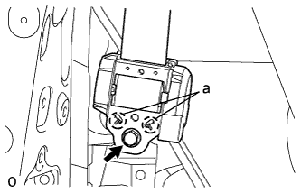

ЗАДНИЙ РЕМЕНЬ БЕЗОПАСНОСТИ № 2 В СБОРЕ > УСТАНОВКА |
| 1. УСТАНОВИТЕ НАКЛАДКУ КРЕПЛЕНИЯ РЕМНЯ БЕЗОПАСНОСТИ В СБОРЕ (с правой стороны) |
Закрепите пластину крепления 2 болтами.
| 2. УСТАНОВИТЕ НАКЛАДКУ КРЕПЛЕНИЯ РЕМНЯ БЕЗОПАСНОСТИ ЛЕВОГО ЗАДНЕГО СИДЕНЬЯ В СБОРЕ |
Установите накладку крепления и зафиксируйте ее болтом.
| 3. УСТАНОВИТЕ ЛЕВЫЙ ЗАДНИЙ РЕМЕНЬ БЕЗОПАСНОСТИ № 2 В СБОРЕ |
|  |
Совместите установочные отверстия ремня безопасности с захватами, установите устройство вытяжения ремня безопасности и закрепите его болтом.
Установите плечевое крепление ремня безопасности заднего сиденья № 2 и закрепите его болтом.
| 4. УСТАНОВИТЕ ЛЕВУЮ ЗАДНЮЮ БОКОВУЮ ОБЛИЦОВОЧНУЮ ПАНЕЛЬ В СБОРЕ |
Для моделей с задним сиденьем № 2:
Введите в зацепление 4 фиксатора и 2 направляющие и пропустите напольное крепление ремня безопасности заднего сиденья № 2 через заднюю боковую облицовочную панель.
Введите в зацепление 7 фиксаторов и 2 направляющие, чтобы закрепить заднюю боковую облицовочную панель.
| 5. УСТАНОВИТЕ ЛЕВУЮ БОКОВУЮ ОБЛИЦОВОЧНУЮ ПАНЕЛЬ ПОЛКИ БАГАЖНОГО ОТДЕЛЕНИЯ В СБОРЕ |
Установите боковую облицовочную панель полки багажного отделения, закрепив ее 4 фиксаторами и 8 захватами.
Вверните 2 болта и 2 винта.
Установите напольное крепление ремня безопасности заднего сиденья № 2 и закрепите его болтом.
Установите напольное крепление ремня безопасности заднего сиденья № 1 и закрепите его болтом.
| 6. УСТАНОВИТЕ ВЕРХНИЙ ПОРУЧЕНЬ В СБОРЕ |
Установите верхний поручень и закрепите его 2 болтами.
| 7. УСТАНОВИТЕ ЗАГЛУШКУ ВЕРХНЕГО ПОРУЧНЯ |
Введите в зацепление 2 захвата и установите заглушку верхнего поручня.
| 8. УСТАНОВИТЕ ЛЕВУЮ ПЕРЕДНЮЮ БОКОВУЮ ОБЛИЦОВОЧНУЮ НАКЛАДКУ ПОЛКИ БАГАЖНОГО ОТДЕЛЕНИЯ (для моделей с задней крышкой) |
Введите в зацепление 2 захвата, чтобы закрепить переднюю боковую облицовочную накладку полки багажного отделения
| 9. УСТАНОВИТЕ КОЛПАЧОК КРЕПЛЕНИЯ ЗАДНЕЙ КРЫШКИ № 1 (для моделей без задней крышки) |
Введите в зацепление 2 захвата, чтобы закрепить колпачок крепления задней крышки № 1.
| 10. УСТАНОВИТЕ ЗАЩЕЛКУ ОБЛИЦОВКИ БАГАЖНОГО ОТДЕЛЕНИЯ № 1 |
Установите защелку облицовочной панели багажного отделения № 1, повернув ее по часовой стрелке.
| 11. УСТАНОВИТЕ НАКЛАДКУ КРЕПЛЕНИЯ ПОЯСНОГО РЕМНЯ БЕЗОПАСНОСТИ ЗАДНЕГО СИДЕНЬЯ № 1 |
Введите в зацепление 3 захвата, чтобы установить накладку крепления поясного ремня безопасности заднего сиденья № 1.
| 12. УСТАНОВИТЕ ЛЕВУЮ БОКОВУЮ НАПРАВЛЯЮЩУЮ ПОЛА (для моделей с направляющей полки багажного отделения) |
Установите боковую направляющую пола, закрепив ее 3 болтами.
| 13. УСТАНОВИТЕ ПРАВУЮ БОКОВУЮ НАПРАВЛЯЮЩУЮ ПОЛА (для моделей с направляющей полки багажного отделения) |
| 14. УСТАНОВИТЕ УПЛОТНИТЕЛЬ ПРОЕМА ЗАДНЕЙ ЛЕВОЙ ДВЕРИ |
 |
Совместите нанесенную краской отметку на уплотнителе обшивки проема задней двери с отмеченным положением на автомобиле и установите уплотнитель обшивки проема задней двери, как показано на рисунке.
| *1 | Метка, нанесенная краской |
| *2 | Положение метки |
| 15. УСТАНОВИТЕ ОПОРНУЮ НАКЛАДКУ ЛЕВОЙ ЗАДНЕЙ ДВЕРИ |
Введите в зацепление 3 фиксатора, 6 захватов и 2 направляющие, чтобы установить опорную накладку задней двери.
| 16. УСТАНОВИТЕ ЛЕВУЮ ЗАДНЮЮ БОКОВУЮ ОПОРНУЮ НАКЛАДКУ |
Установите заднюю боковую опорную накладку и закрепите ее 2 болтами.
| 17. УСТАНОВИТЕ ЗАДНЮЮ НАКЛАДКУ ПОРОГА ПОЛА № 1 |
Введите в зацепление 2 захвата, чтобы установить заднюю накладку порога пола № 1.
| 18. УСТАНОВИТЕ ЛЕВОЕ ЗАДНЕЕ СИДЕНЬЕ № 2 В СБОРЕ |
Для сидений с ручным приводом:
Установите левое заднее сиденье № 2 в сборе (Нажмите здесь).
Для сидений с электроприводом:
Установите левое заднее сиденье № 2 в сборе (Нажмите здесь).